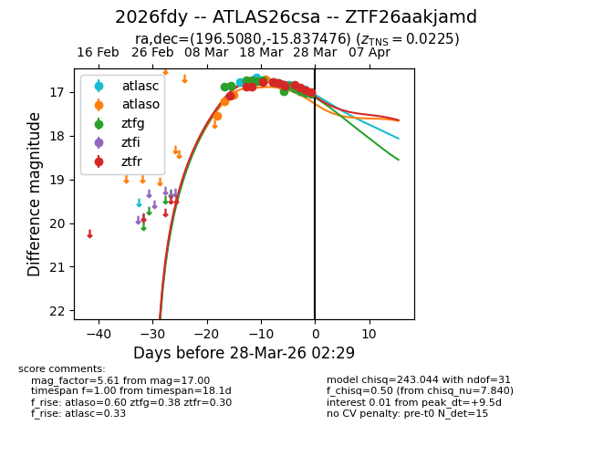
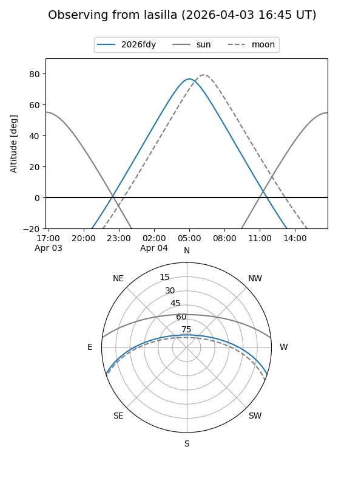
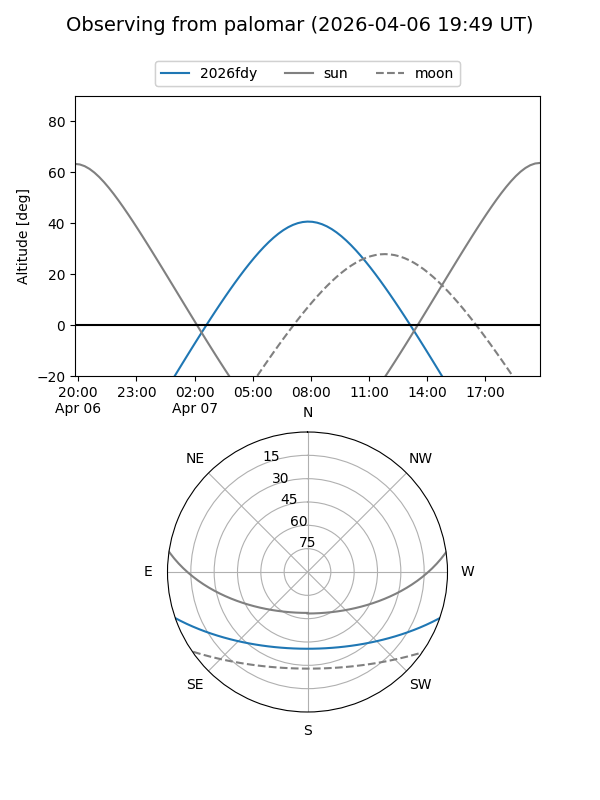
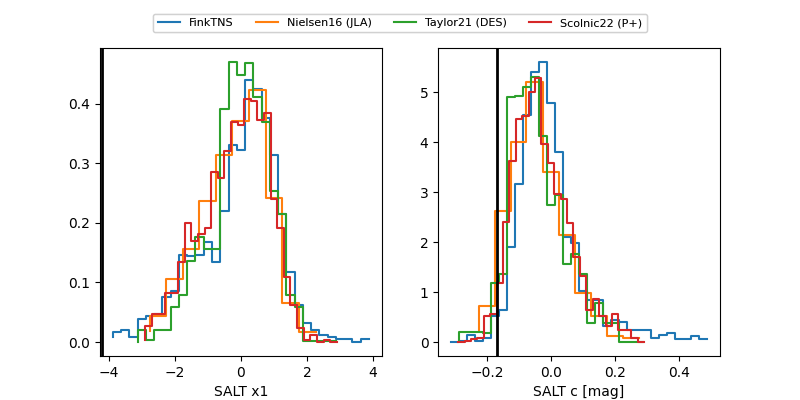

2026fdy
Target 2026fdy at 2026-03-28 02:32
Aliases and brokers:
FINK: link
Lasair: link
ALeRCE: link
TNS: link
YSE: link
alt names
ZTF26aakjamd (ztf,fink_ztf)
2026fdy (tns,yse)
ATLAS26csa (atlas)
Coordinates:
equatorial (ra, dec) = 196.5080,-15.83748
equatorial (HMS+DMS) = 13:06:01.91,-15:50:14.91
galactic (l, b) = (308.0713,+46.88859)
Flags:
Photometry:
last atlasc=16.95, atlaso=16.98, ztfg=17.04, ztfr=17.00
4 atlasc, 6 atlaso, 14 ztfg, 11 ztfr detections
Lightcurve

Visibility


Additional plots
